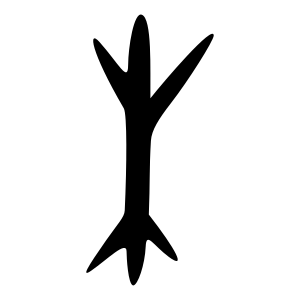

漢字構造：六書與部件
江水的「江」，為什麼有個「工」？換一塊部件，看看字義和讀音各跟著誰走。
部件字框
組成的字

讀原典
怎麼讀六書？
象形描形，指事標出所在，會意合義，形聲以形旁提示意義、以聲符提示讀音。可從傳世《說文》的說解（含徐鉉等人新附字）判讀部件的角色。
轉注以「考、老」為例，兩字在《說文》互訓，歷來對轉注的解釋有分歧。假借是借已有字形記另一個同音或近音的詞，許慎舉「令、長」為例。這兩類要看字義或用法之間的關係。
聲母、韻母與聲調怎麼比？
以聲符和整字在例詞中的現代國語注音逐項比對。韻母包含介音，一聲不標調號。零聲母或未另標韻符時，該欄記為未能由符號對比。今音比對看不出古音是否相同。
\[N=\sum_{i=1}^{3} m_i,\qquad m_i\in\{0,1\}\]
每項明示且相同記 1，相異或未另標記 0。
字庫、版本與出處
《說文》是東漢許慎依小篆所作的說解，其中一部分已由甲骨文、金文等出土文字修正；本台依傳世《說文》歸類，是教學上的入門分法。
拼字台的字框只放兩個部件，是簡化；不少字由三個以上部件組成，或部件在楷書中變形、省筆。
朱駿聲《說文通訓定聲》卷首〈六書爻列〉列形聲字 7,697 個。以許慎〈敘〉所記正文 9,353 字為分母，約占 82.3%。這個分母不含另列的 1,163 個重文，也不含後來徐鉉等人的新附字。
本台選收 80 字、6 個聲符家族，依傳世《說文》說解歸類，含「亦聲」的兼具角色。字框記錄構件，部件在楷書中的位置與形狀可能改變。字庫以外的組合仍可能是實有的字。
引文採「說文解字」專案的數位轉錄，含徐鉉等人的新附字。「月」「青」條旁附四庫本影像與校記。今音依教育部《重編國語辭典修訂本》臺灣學術網路第六版（2021）。
龜腹甲是原創教具模型，一次展示一個有據的商代字形。三欄呈現各時期的一個字例。